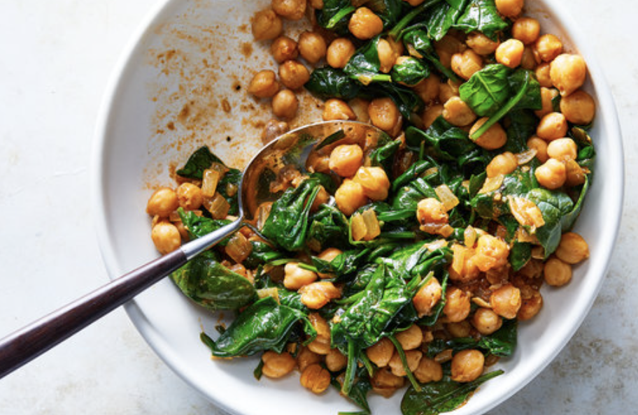

Vegan Chickpeas

This recipe is healthy for any age group. It is easy and fast to have it ready. It has several benefits such as: healthy fats, high protein, no unhealthy cholesterol, etc.
Ingredients
- Chickpeas
- Grilled Small Tomatoes
- Kale
- Zuccini
- Spinach
Steps for cooking:
- Soak the Chickpeas in water and boil them for about 40 mins.
- Chop the vegetable in small pieces.
- Once the chickpeas are soft, throw in the vegtables and leave them in the water alonside the chickpeas for about 20 minutes.